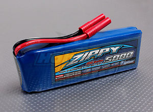
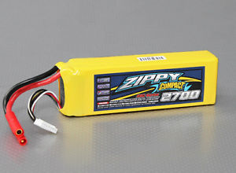
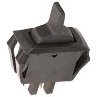
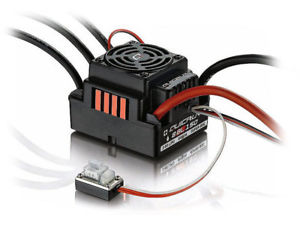
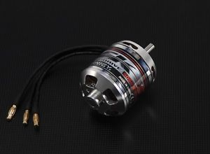

The Plan: Diagramming the Electronics
This post is a high level description of the electronics I used - it’s not necessary to make the build that I did, but it’s meant to be helpful in understanding why I made certain decisions.
The Big Picture

The big picture for the electronics is for a charging system to supply power to two different battery systems. One battery system will power the motor, and the other will be for the lower power electronics, such as the lights, bluetooth reciever, and circuitry used to control the motor. The high power and low power electronics are run off of different batteries mostly because I had three different batteries. You could just use the bigger battery system and run the lower power electronics off of regulators and buck converters, such as in the following diagram:

Battery and Charging
Let’s take a deeper look at the charging system. On the low power side of the electronics, we have a buck conveter - this efficiently changes the 24 volts from the power jack to the 11.1 volts the 3S battery expects while charging. The buck converter I got is also CC CV. This means that in addition to having a knob to adjust voltage output (CV - constant voltage), the buck converter has a knob to limit output current (CC - constant current). Lipo batteries are generally charged using a CC CV supply, as an excess of charging voltage or current can harm them.
On the motor side of the electronics, we have a boost converter. This will efficiently change a lower input voltage (24 volts from the laptop charger I have) to the 25.6 volts expected by the bigger 6S battery. The diode following the boost converter will stop current from travelling backwards towards the other side of the electronics. If the diode wasn’t present, the 6S battery would end up charging the 3S battery, damaging itself as its own voltage sank lower and lower.
Each battery also has a voltage monitor and a balance connected. The balances ensure that the cells in a given battery are at the same voltage (this increases the lifepsan of the battery), and the monitors go off if the battery they’re connected to is dangerously low on charge.
Low Power Electronics
Zooming in on low power electronics side, after the battery, we have a switch to power the board on and off. Then a buck converter changes the 3S battery’s 11.1 volts to 6 volts, which the lights and Arduino are happy with. It’s important that the buck is after the switch. If the switch was after the buck, then even when the board was off, the buck would consume available power for its indicator light.
The Arduino is the brains of the board - it runs code to control everything else. This is because optimally, all of the electronics on the board would be controllable via Bluetooth. The Arduino takes input from the Bluetooth module, which it also powers. It also has a control wire running to the speed controller for the motor. One drawback to the Arduino’s centrality is that if the Arduino becomes too busy with one particular task, everything stops. For this reason, it might be wise to use two Arduinos in the future.
The lights are controlled by the Arduino, but powered from the buck converter, as they can use up to 7 amps of current. They’re just for show.
The piezo horn is pretty straight forward - it takes a DC voltage in, and makes a loud noise. It might be wise to power it through a relay in the future - it operates with 5 volts to 8 volts, so it doesn’t reach its noise potential using the Arduino’s 5 volts.
The motor relay is actually two relays. The first relay controls the programming button on the speed controller, and the other can be used to switch the speed controller on and off. The relay board is powered using a 5 volt regulator, since the board pulls more current than the Arduino can handle
High Power Electronics
The electronics on the high power side are pretty simple - the 6S battery powers the electronic speed controller, which powers and controls the motor. The speed controller is controlled in every way by the Arduino using relays.
Parts
-
Boost Converter - Ebay lists 150W DC-DC boost converters for $6 that look just like this one.

-
Buck Converter (2) - Ebay lists 150W DC-DC CC CV buck converters for $4 that look like this one.

-
Diode >=10A, >=30V - Microcenter has the NTE5812HC for $1.70

-
3S Lipo Battery - Ebay, Amazon, or HobbyKing will stock 3S batteries. The battery’s C rating multiplied by its capacity should be at least 20, however most will be quite a bit bigger (e.g 20C * 5000mAh = 100A). If the low power electronics suck up around 10A with the lights fully on (low power battery life will go up 10x with the lights off), you will get (60h r/min * Capacity / 10A) minutes of battery life (e.g. 60 min/hr * 5000 mAh / 10 A = 30 min). A 5000mAh 3S will be about $30.
 -
6S Lipo Battery (or two more 3S) - The battery or batteries for the high power side should have capacity times C rating at at least 100 (e.g. 20C * 5000mAh = 100A). The bigger the better - the 6S battery capacity will determine the longboard’s range. A 5000 mAh 6S will be about $60.
 -
Voltage Monitor (One for each battery) - These are available at any big online retailer and most RC retailers. I have two from two different companies - both are inaccurate in the mid range by about 0.1 volts. Fortunately the inaccuracy is consistent, and the voltage alarm can be set to different voltages. I purchased 4 for $14.

-
Balance (One 6S, one 3S) - Search for “balance bms lipo” to find these on Ebay. I got one for $7. The balance doesn’t need discharge or charge connections - just places to connect the balance. To learn more, look up battery management systems.

-
Switch >=10A, >=15V - I got a heavy duty switch from Microcenter for about $2.50.
 -
ESC >=100A, >=6S - I got the waterproof 8BL150 Hobbywing for about $85. The gold standard for ESCs is the VESC, or Vedder ESC. It was designed to be very flexible, costs around $100 (it can get highr), and is specifically for electric longboards.
 -
Outrunner Motor ~5055, ~250-~350 kV - I got a 280kV motor from Ebay for about $50. Some motors have higher kV ratings, but are a lot smaller than 5055. A smaller motor won’t have as much torque, and thus won’t actually go as fast as it claims with a person riding.
 -
Arduino Pro Micro 5V - The Pro Micro is small, has dedicated serial IO, and can be bounght in packs for $5 a piece or less on Ebay.

-
Relay Board >= 2 Channel- Relay boards built for microcontrollers isolate the controller from the switching current, protecting the Arduino. I got a 4 channel board from microcenter for $12, but haven’t ended up using the extra 2 channels.

-
1M Addressable RGB Lights Sealed (2x)- Each of these is around $25 on Sparkfun or Ebay. You can find them cheaper, but they may use a different protocol, or lack some of the features that these have (such as waterproofing).

-
Bluetooth Mate Gold- Sparkfun sells these for $35 if you want 100m of range, but you can get bluetooth modules elsewhere for a lot cheaper.

-
Piezo - I got this from Microcenter for $5. This buzzes when given a DC voltage - you can get buzzers that need a switching voltage, but then the Arduino will have to do more work.

Parts Total: ~$369